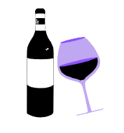

THE MYSIS VANOIR
ESPORTES
INTERSÉRIES
Interséries Senac ocorreu antes das féries, e foi um evento que engajou todos os alunos, tanto da tarde quanto da manhã.
Modalidades: O interséries esse ano teve mais modalidades como o xadrez e fifa. Claro, os clássicos basquete, volêi e futsal não ficaram de fora.
Iniciou-se com o volêi, disputado por as grades (primeiro, segundo e terceiro), tanto da tarde quanto da manhã. Foram Construidos: Bandeiras, Hino...
Houve turmas em que apresentou-se mascote e caracterização especial, como, cabelos pintados e uniforme proprio.
Também no mesmo dia basquete que foi disputado por diversas equipes e finalizou-se com placares em torno de 8 a 15 pontos.
O último dia foi reservado para o futsal que foi onde houve mais atletas e times. Todos os esportes contaram com juizes próprios de cada um.
Interclasse Senac. O esporte muda vidas.

“Lendas, como Kobe, nunca morrem”, reflete LeBron James
“Dizem que o tempo cura tudo. Por mais devastador e trágico que tenha sido e ainda é, tudo o que podemos fazer é esperar que o tempo cure as feridas. Isso não aconteceu e acho que pode demorar. Cada pessoa tem seu processo de luto e é preciso respeitá-lo. O que podemos fazer é estar próximos das pessoas e darmos apoio uns aos outros na jornada”, afirmou o craque, em entrevista coletiva.
Kobe faleceu em um acidente de helicóptero que vitimou fatalmente outras oito pessoas – incluindo uma de suas filhas, Gigi, de 13 anos. A devastadora notícia iniciou uma série de tributos e homenagens, de famosos e anônimos, que atravessaram o ano inteiro. Um dos pontos sempre apontados no jogo do falecido astro eram suas semelhanças técnicas com Michael Jordan, mas, para LeBron, ele sempre foi absolutamente único em quadra.
“Nós lembramos de Kobe quando vestimos os uniformes Black Mamba e tivemos grande sucesso na ‘bolha’. Há jogadores que usam os seus tênis até hoje. E, ao entrarmos no Staples Center, vemos as duas camisas (#8 e #24) no teto. Estamos sendo capazes de ver e viver o seu legado. Existem muitas coisas que morrem nesse mundo, mas lendas nunca morrem. Lendas, como Kobe, nunca morrem”, concluiu LeBron, um dos maiores jogadores de todos os tempos ao lado do genial amigo.